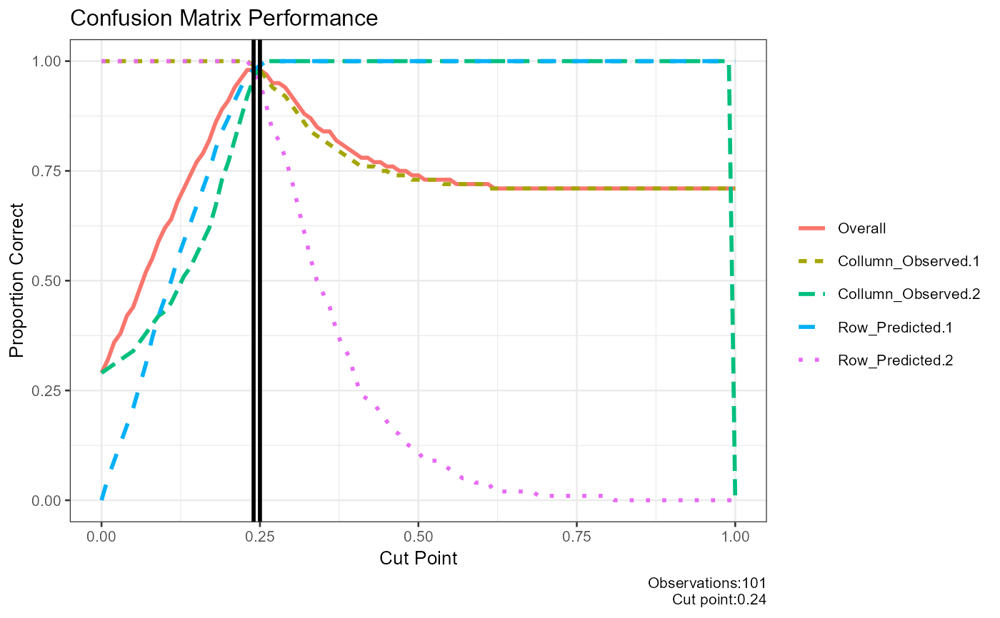
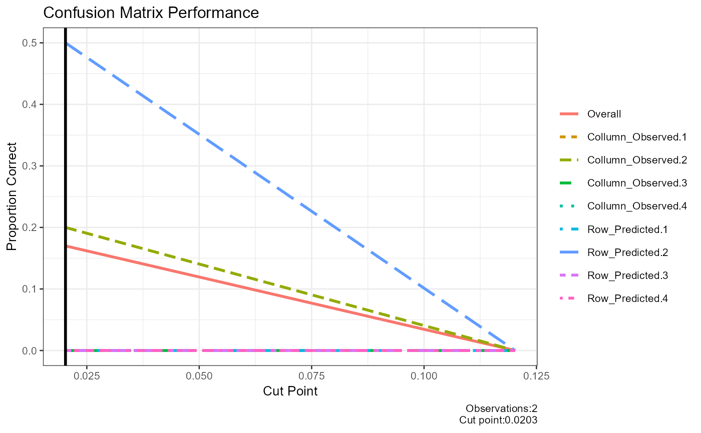

Plot performance of confusion matrix for different cut off points
Source:R/FUNCTIONS_TRAIN_TEST.R
result_confusion_performance.RdThis function generates a plot to visualize the performance of a confusion matrix at various cut-off points. It evaluates the proportion of correct classifications and identifies the optimal cut-off point.
Arguments
- observed
Vector of observed outcomes. These are the true class labels.
- predicted
Vector of predicted outcome probabilities. These are the predicted probabilities for the positive class.
- step
Numeric value representing the stepping for tested cut values. Defaults to 0.1.
- base_size
Integer value representing the base font size for the plot. Defaults to 10.
- title
String representing the title of the plot. Defaults to an empty string.
Details
This function evaluates the performance of a confusion matrix at different cut-off points. It iterates through a range of cut-off points, calculates the confusion matrix,and evaluates the proportion of correct classifications for each cut-off.
The function generates a plot that includes: -The proportion of correct classifications for different cut-off points. -Vertical lines indicating the optimal cut-off point. -A legend representing different performance metrics. -A caption showing the number of observations and the optimal cut-off point.
The function returns a list containing the plot,the data frame with cut-off performance,the optimal cut-off point, and the confusion matrix at the optimal cut-off.
Examples
# Example with numeric class labels
df<-data.frame(matrix(.999,ncol=2,nrow=2))
correlation_matrix<-as.matrix(df)
diag(correlation_matrix)<-1
df<-generate_correlation_matrix(correlation_matrix,nrows=1000)
df$X1<-ifelse(abs(df$X1) < 1,0,1)
df$X2<-abs(df$X2)
df$X2<-(df$X2-min(df$X2))/(max(df$X2)-min(df$X2))
result_confusion_performance(observed=round(abs(df$X1),0),
predicted=abs(df$X2),
step=0.01)
#> $plot_performance

#>
#> $cut_performance
#> cut_point Overall Collumn_Observed.1 Collumn_Observed.2 Row_Predicted.1 Row_Predicted.2 Mean_proportion
#> 1 0.00 0.29 1.00 0.29 0.00 1.00 0.5725
#> 2 0.01 0.32 1.00 0.30 0.05 1.00 0.5875
#> 3 0.02 0.36 1.00 0.31 0.09 1.00 0.6000
#> 4 0.03 0.38 1.00 0.32 0.13 1.00 0.6125
#> 5 0.04 0.42 1.00 0.33 0.17 1.00 0.6250
#> 6 0.05 0.44 1.00 0.34 0.21 1.00 0.6375
#> 7 0.06 0.48 1.00 0.36 0.26 1.00 0.6550
#> 8 0.07 0.52 1.00 0.38 0.31 1.00 0.6725
#> 9 0.08 0.55 1.00 0.40 0.37 1.00 0.6925
#> 10 0.09 0.59 1.00 0.42 0.42 1.00 0.7100
#> 11 0.10 0.62 1.00 0.43 0.46 1.00 0.7225
#> 12 0.11 0.64 1.00 0.45 0.50 1.00 0.7375
#> 13 0.12 0.68 1.00 0.48 0.55 1.00 0.7575
#> 14 0.13 0.71 1.00 0.51 0.59 1.00 0.7750
#> 15 0.14 0.74 1.00 0.53 0.63 1.00 0.7900
#> 16 0.15 0.77 1.00 0.56 0.67 1.00 0.8075
#> 17 0.16 0.79 1.00 0.59 0.71 1.00 0.8250
#> 18 0.17 0.82 1.00 0.62 0.75 1.00 0.8425
#> 19 0.18 0.86 1.00 0.67 0.80 1.00 0.8675
#> 20 0.19 0.89 1.00 0.73 0.84 1.00 0.8925
#> 21 0.20 0.91 1.00 0.77 0.87 1.00 0.9100
#> 22 0.21 0.94 1.00 0.82 0.91 1.00 0.9325
#> 23 0.22 0.96 1.00 0.87 0.94 1.00 0.9525
#> 24 0.23 0.98 1.00 0.92 0.97 1.00 0.9725
#> 25 0.24 0.98 0.99 0.96 0.98 0.98 0.9775
#> 26 0.25 0.98 0.98 0.99 0.99 0.95 0.9775
#> 27 0.26 0.97 0.96 1.00 1.00 0.90 0.9650
#> 28 0.27 0.95 0.94 1.00 1.00 0.84 0.9450
#> 29 0.28 0.95 0.93 1.00 1.00 0.82 0.9375
#> 30 0.29 0.94 0.92 1.00 1.00 0.78 0.9250
#> 31 0.30 0.92 0.90 1.00 1.00 0.73 0.9075
#> 32 0.31 0.90 0.88 1.00 1.00 0.67 0.8875
#> 33 0.32 0.88 0.86 1.00 1.00 0.61 0.8675
#> 34 0.33 0.87 0.84 1.00 1.00 0.55 0.8475
#> 35 0.34 0.85 0.83 1.00 1.00 0.50 0.8325
#> 36 0.35 0.84 0.82 1.00 1.00 0.47 0.8225
#> 37 0.36 0.84 0.81 1.00 1.00 0.44 0.8125
#> 38 0.37 0.82 0.80 1.00 1.00 0.39 0.7975
#> 39 0.38 0.81 0.79 1.00 1.00 0.35 0.7850
#> 40 0.39 0.80 0.78 1.00 1.00 0.33 0.7775
#> 41 0.40 0.79 0.77 1.00 1.00 0.28 0.7625
#> 42 0.41 0.78 0.76 1.00 1.00 0.24 0.7500
#> 43 0.42 0.78 0.76 1.00 1.00 0.23 0.7475
#> 44 0.43 0.77 0.76 1.00 1.00 0.22 0.7450
#> 45 0.44 0.77 0.75 1.00 1.00 0.20 0.7375
#> 46 0.45 0.76 0.75 1.00 1.00 0.18 0.7325
#> 47 0.46 0.76 0.74 1.00 1.00 0.16 0.7250
#> 48 0.47 0.75 0.74 1.00 1.00 0.15 0.7225
#> 49 0.48 0.75 0.74 1.00 1.00 0.13 0.7175
#> 50 0.49 0.74 0.73 1.00 1.00 0.12 0.7125
#> 51 0.50 0.74 0.73 1.00 1.00 0.11 0.7100
#> 52 0.51 0.73 0.73 1.00 1.00 0.09 0.7050
#> 53 0.52 0.73 0.73 1.00 1.00 0.09 0.7050
#> 54 0.53 0.73 0.73 1.00 1.00 0.09 0.7050
#> 55 0.54 0.73 0.72 1.00 1.00 0.08 0.7000
#> 56 0.55 0.73 0.72 1.00 1.00 0.07 0.6975
#> 57 0.56 0.72 0.72 1.00 1.00 0.06 0.6950
#> 58 0.57 0.72 0.72 1.00 1.00 0.05 0.6925
#> 59 0.58 0.72 0.72 1.00 1.00 0.05 0.6925
#> 60 0.59 0.72 0.72 1.00 1.00 0.04 0.6900
#> 61 0.60 0.72 0.72 1.00 1.00 0.04 0.6900
#> 62 0.61 0.72 0.71 1.00 1.00 0.04 0.6875
#> 63 0.62 0.71 0.71 1.00 1.00 0.02 0.6825
#> 64 0.63 0.71 0.71 1.00 1.00 0.02 0.6825
#> 65 0.64 0.71 0.71 1.00 1.00 0.02 0.6825
#> 66 0.65 0.71 0.71 1.00 1.00 0.02 0.6825
#> 67 0.66 0.71 0.71 1.00 1.00 0.02 0.6825
#> 68 0.67 0.71 0.71 1.00 1.00 0.02 0.6825
#> 69 0.68 0.71 0.71 1.00 1.00 0.02 0.6825
#> 70 0.69 0.71 0.71 1.00 1.00 0.01 0.6800
#> 71 0.70 0.71 0.71 1.00 1.00 0.01 0.6800
#> 72 0.71 0.71 0.71 1.00 1.00 0.01 0.6800
#> 73 0.72 0.71 0.71 1.00 1.00 0.01 0.6800
#> 74 0.73 0.71 0.71 1.00 1.00 0.01 0.6800
#> 75 0.74 0.71 0.71 1.00 1.00 0.01 0.6800
#> 76 0.75 0.71 0.71 1.00 1.00 0.01 0.6800
#> 77 0.76 0.71 0.71 1.00 1.00 0.01 0.6800
#> 78 0.77 0.71 0.71 1.00 1.00 0.01 0.6800
#> 79 0.78 0.71 0.71 1.00 1.00 0.01 0.6800
#> 80 0.79 0.71 0.71 1.00 1.00 0.01 0.6800
#> 81 0.80 0.71 0.71 1.00 1.00 0.01 0.6800
#> 82 0.81 0.71 0.71 1.00 1.00 0.00 0.6775
#> 83 0.82 0.71 0.71 1.00 1.00 0.00 0.6775
#> 84 0.83 0.71 0.71 1.00 1.00 0.00 0.6775
#> 85 0.84 0.71 0.71 1.00 1.00 0.00 0.6775
#> 86 0.85 0.71 0.71 1.00 1.00 0.00 0.6775
#> 87 0.86 0.71 0.71 1.00 1.00 0.00 0.6775
#> 88 0.87 0.71 0.71 1.00 1.00 0.00 0.6775
#> 89 0.88 0.71 0.71 1.00 1.00 0.00 0.6775
#> 90 0.89 0.71 0.71 1.00 1.00 0.00 0.6775
#> 91 0.90 0.71 0.71 1.00 1.00 0.00 0.6775
#> 92 0.91 0.71 0.71 1.00 1.00 0.00 0.6775
#> 93 0.92 0.71 0.71 1.00 1.00 0.00 0.6775
#> 94 0.93 0.71 0.71 1.00 1.00 0.00 0.6775
#> 95 0.94 0.71 0.71 1.00 1.00 0.00 0.6775
#> 96 0.95 0.71 0.71 1.00 1.00 0.00 0.6775
#> 97 0.96 0.71 0.71 1.00 1.00 0.00 0.6775
#> 98 0.97 0.71 0.71 1.00 1.00 0.00 0.6775
#> 99 0.98 0.71 0.71 1.00 1.00 0.00 0.6775
#> 100 0.99 0.71 0.71 1.00 1.00 0.00 0.6775
#> 101 1.00 0.71 0.71 0.00 1.00 0.00 0.4275
#>
#> $cut
#> [1] 0.24 0.25
#>
#> $confusion_matrix
#> 0 1 sum p
#> 0 702.00 12.00 714.00 0.98
#> 1 5.00 281.00 286.00 0.98
#> sum 707.00 293.00 1000.00 1.00
#> p 0.99 0.96 1.00 0.98
#>
result_confusion_performance(observed=c(1,2,3,1,2,3),
predicted=abs(rnorm(6,0,sd=0.1)))
#> $plot_performance

#>
#> $cut_performance
#> cut_point Overall Collumn_Observed.1 Collumn_Observed.2 Collumn_Observed.3 Collumn_Observed.4 Row_Predicted.1 Row_Predicted.2 Row_Predicted.3 Row_Predicted.4 Mean_proportion
#> 1 0.02026 0.17 0 0.2 0 0 0 0.5 0 0 0.0875
#> 2 0.12026 0.00 0 0.0 0 0 0 0.0 0 0 0.0000
#>
#> $cut
#> [1] 0.02026
#>
#> $confusion_matrix
#> 0 1 2 3 sum p
#> 0 0.00 1.00 0.00 0.00 1.00 0.00
#> 1 0.00 1.00 2.00 2.00 5.00 0.20
#> 2 0.00 0.00 0.00 0.00 0.00 0.00
#> 3 0.00 0.00 0.00 0.00 0.00 0.00
#> sum 0.00 2.00 2.00 2.00 6.00 1.00
#> p 0.00 0.50 0.00 0.00 1.00 0.17
#>